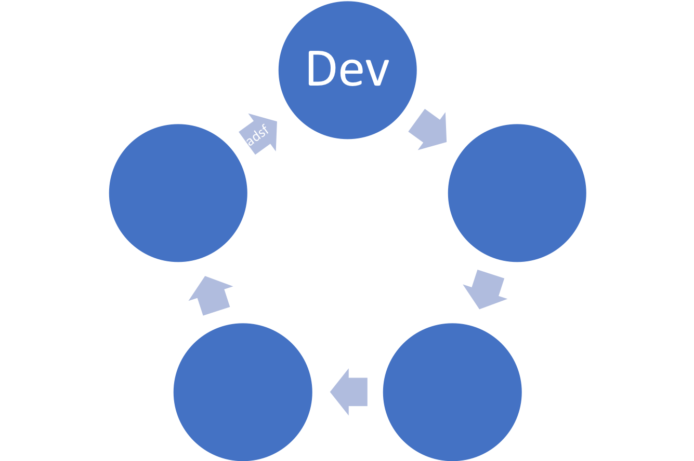

We are micro services, but dont have any build/deployment advantages that come with it
Getting a maglev build out is a huge task
CI/CD tooling is not streamlined
Butterfly effect and blast radius
Code layout is not uniform
Developer workflow
Return of the monolith

Official package manager for k8s apps
helm (client), tiller (server)Provides a notion of a release
releases are stored as custom objects in k8s cluster (via tiller) Provides a helm repository
helm install nginx)Maglev should come up on ANY k8s cluster (irrespective of how they are created)
+---------------------------------------------+
| Maglev Distribution (helm) |
| +---------------+ +-----------------+ |
| | managed | | core addons | |
| | services | | | |
| | | | | |
| +---------------+ +-----------------+ |
+---------------------------------------------+
+---------------------------------------------+
| K8S Cluster |
| kubeadm, tectonic, kops, managed |
+---------------------------------------------+
+---------------------------------------------+
| Infrastructure |
| (IaaS, VSphere, BareMetal + any) |
+-----------------------------+---------------+
pre-install hookhelm installmaglev-distro can be another kind supported by catalogserver